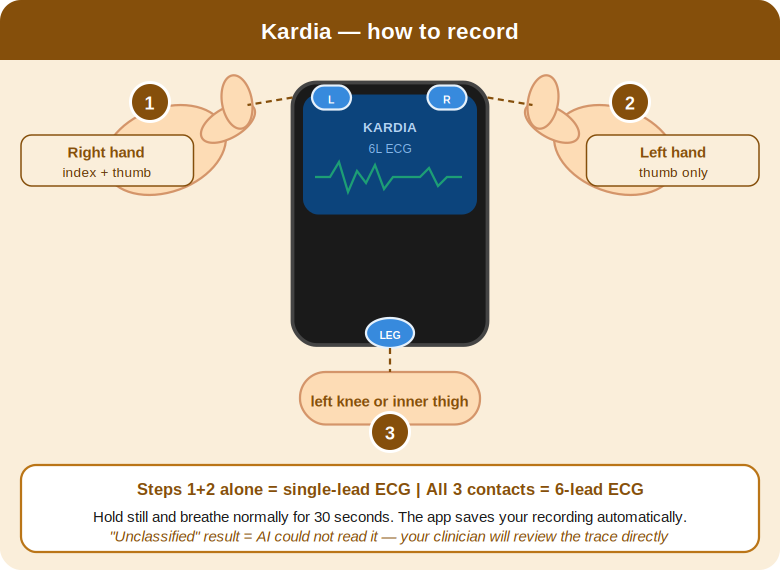
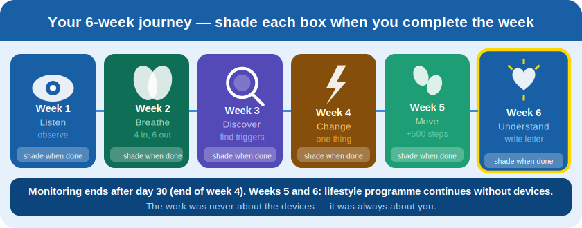
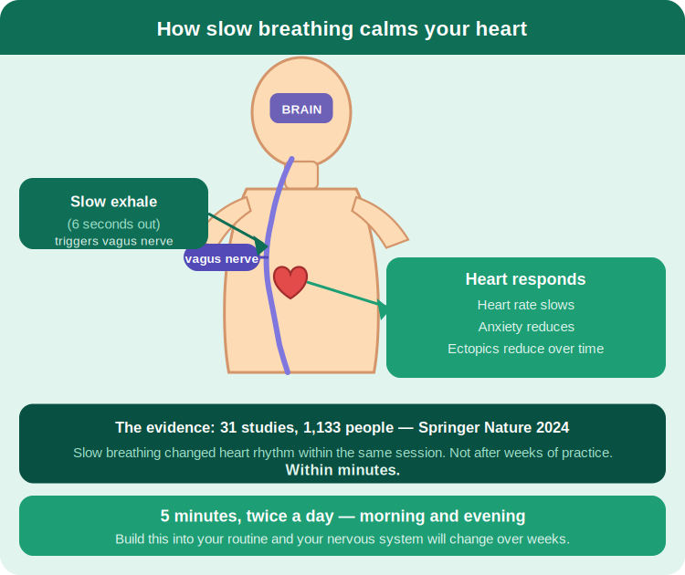
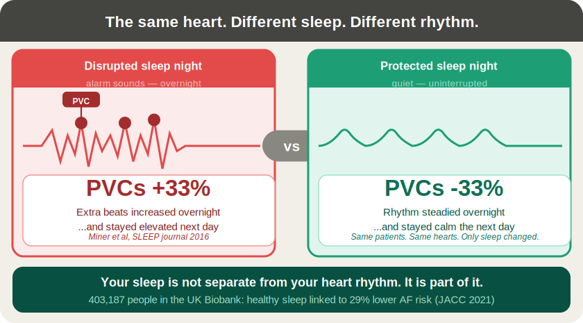

London Cardiology Clinic — OpenPalp Programme
Your Personal Heart Rhythm Programme
30 days of monitoring. 6 weeks of understanding.
40–44 The Broadway, Wimbledon, London SW19 1RQ
My personal commitment
Before you read another word — take a moment. You came here because something has been worrying you. That took courage. This is your programme. These are your thirty days.
Complete these three lines today. Come back and read them on day 30.
What is in this booklet
- Understanding your heart — why palpitations happen and why they are distressing
- Your device — Kardia setup, recording, and when to use it
- When you feel palpitations — the 6-step in-the-moment protocol
- Your daily practice — morning routine, evening routine, experiments
- Your 6-week journey — week-by-week focus areas
- Your 30-day diary — daily tracking tables, weekly reflections
- Your progress tracker — compare week 2 vs week 4 vs week 6
- The evidence — the studies behind the programme
- A letter to yourself — write it at the end of week 6
- Safety, consent, and device — your agreement with the clinic
- Results appointment — what happens at day 30
Part One
Understanding your heart
You are not alone
If you are reading this, you have probably spent time worrying about your heart — perhaps lying awake, perhaps checking your pulse repeatedly, perhaps avoiding things you used to enjoy. You are not imagining your symptoms. And you are not alone.
Millions of people experience palpitations. Most of the time, they are not a sign of a serious heart problem — but that does not make them any less real, or any less frightening, when they happen to you.
What your heart is doing
Your heart beats about 100,000 times every day. You are not normally aware of it. Palpitations happen when something makes those beats noticeable — an extra beat, a brief change in rhythm, or a heightened sensitivity to normal variation.
Most of these changes are entirely normal. The heart is constantly adjusting: speeding up when you stand, slowing when you breathe out, producing occasional extra beats in virtually every person on the planet. What differs between people is not the beats themselves — it is whether they are noticed, and whether noticing them triggers alarm.
The attention loop — and why it matters
Once you become aware of your heartbeat, attention amplifies sensation. The brain, trained to protect you, monitors the heart more closely. More monitoring means more awareness. More awareness means more anxiety. Anxiety activates the nervous system, which changes heart rhythm, which gives the brain more to monitor.
This is not a psychological problem. It is a normal nervous system doing exactly what it was designed to do. The programme is designed to interrupt the loop — not by ignoring it, but by giving you information, tools, and evidence that allow your nervous system to stand down.
Common triggers
You will find your personal triggers through this programme. Most people are surprised by what they discover. The most common triggers are:
- Caffeine — coffee, tea, cola, energy drinks. Even moderate amounts can increase ectopic beat frequency in sensitive individuals.
- Poor sleep — even one disturbed night increases sympathetic nervous system activity and sensitivity to rhythm changes.
- Stress and anxiety — activates the nervous system directly, increasing heart rate and ectopic beat frequency.
- Alcohol — particularly the morning after drinking, when acetaldehyde and dehydration combine.
- Dehydration — reduces blood volume and raises resting heart rate.
- Hormonal changes — menstrual cycle, thyroid dysfunction, perimenopause. All affect cardiac electrophysiology directly.
Where you are starting from
Fill this in today. You will revisit it at week 6.
Palpitations per week (approximate)
Average severity (1–10)
Sleep quality (1–10)
Heart anxiety (1–10)
Energy (1–10)
Average daily steps
Part Two
Your device — Kardia
The Kardia is yours to use whenever you feel something. Think of it as your heart’s voice recorder — activated by you, at the moment that matters. Unlike a continuous monitor, it captures the exact moment you choose to record. Your diary tells us what was happening at that moment. Together, they tell the story of your heart.

Setting up — three steps
- Download the free Kardia app — search ‘Kardia’ on the App Store or Google Play. It is free to download and free to use.
- Open the app, tap ‘Add a device’, and follow the pairing steps. The device pairs via ultrasound — no Bluetooth required.
- You do not need a paid subscription. The free tier records, stores, and analyses all your ECGs at no additional cost.
How to record
- Standard recording (2-lead): Left thumb on the bottom electrode. Right index finger and thumb on the top two electrodes.
- Fuller picture (6-lead): Same hand positions, but rest the back of the device lightly on your left knee.
- Hold still. Breathe gently. Stay for 30 seconds. The app saves and analyses your recording automatically.
- If you feel anxious during the recording, that is normal. The palpitations you notice most are often the least significant — and your recording will show that.
When to record
- Whenever you feel palpitations — as soon as you notice a symptom, pick up your Kardia and record. This is the most important recording you can make.
- Every morning — take a resting recording before you get out of bed. This gives a daily baseline and lets us see your HRV trend.
- After activities you suspect — after caffeine, after exercise, after a stressful moment. These before-and-after recordings are often the most revealing.
If your result says ‘Unclassified’
An ‘Unclassified’ result does not mean something is wrong. It means the recording could not be automatically categorised — often because of movement, poor contact, or normal variation that falls outside the algorithm’s defined categories. Dr Ahmad reviews these recordings personally. Your job is simply to record; leave the interpretation to the clinical team.
Part Three
When you feel palpitations
Most episodes pass within a few minutes. Here is what to do — in order. Follow these steps every time.
- 1 Stay calm. Remind yourself: this has happened before, and it passed. Your heart is being monitored. You have a plan.
- 2 Sit or lie down. Reduce physical demands on the heart. Standing up and walking around raises your heart rate and can prolong the episode.
- 3 Breathe slowly. Inhale for 4 counts, exhale for 6 counts. The longer exhale activates the vagus nerve — your body’s main brake on the heart rate. Do this for 2–3 minutes.
- 4 Try a vagal manoeuvre if the episode continues. Either bear down gently (as if you are about to have a bowel movement) for 10–15 seconds, or splash cold water on your face. Both stimulate the vagus nerve and can slow or terminate a fast rhythm. See the safety note below before using these.
- 5 Record on Kardia. Pick up your device and record for 30 seconds. This is the most valuable recording you can make — it captures the rhythm at the moment of symptoms.
- 6 Write in your diary. Note the time, what you were doing, severity, and how long it lasted. Even a brief note is valuable.
Vagal manoeuvres — important note
Bearing down and cold water are safe for most people with benign palpitations. However, do not use these techniques if you have been told you have a significant heart condition, if you are pregnant, or if you have a history of stroke or carotid artery disease. If you are unsure, ask Dr Ahmad before using them.
When to call 999 immediately
- Palpitations lasting more than 15–20 minutes without improvement
- Chest pain, pressure, or tightness alongside palpitations
- Breathlessness that is severe or getting worse
- Dizziness, near-fainting, or loss of consciousness
- A feeling that something is seriously wrong
Do not use this booklet or attempt self-monitoring in an emergency. Call 999.
Part Four
Your daily practice
Small consistent actions change the nervous system more than anything else. You do not need to be perfect. You need to be regular.
Morning routine (5 minutes)
- Take your resting Kardia recording before you get up. Note the result in your diary.
- Check your HRV if your app shows it. Note the number.
- Do 5 minutes of 4–6 breathing (inhale 4, exhale 6).
- Write one line in your diary: how you slept, how many cups of caffeine you plan to have, what your anxiety is at this moment.
Evening routine (5 minutes)
- Do 5 minutes of 4–6 breathing.
- Complete your diary entry: steps, caffeine, palpitations, stress score.
- Note one thing that helped today, even if small.
- Rate your heart anxiety for the day (0–10) and write it down. Watch the trend across weeks.
Understanding HRV — your nervous system score
Heart rate variability (HRV) is the variation between heartbeats. A higher number means your nervous system is calm and adaptable. A lower number means it is under strain.
You do not need to analyse it. Just watch the trend. Most people see their HRV rise over six weeks as their nervous system settles. That number rising is your body telling you the programme is working.
HRV varies considerably between individuals — your absolute number matters less than your personal trend. A consistent upward trend over 6 weeks is meaningful, regardless of where you started.
The caffeine experiment (week 3)
In week 3, reduce your caffeine to one cup per day (or zero if you currently drink one) for seven days. Record your palpitations and heart anxiety each day as normal. At the end of the week, compare with your baseline.
My caffeine experiment result:
The sleep anchor experiment (week 4)
In week 4, set a fixed wake time and stick to it every day — including weekends. A consistent wake time is the single most effective way to regulate sleep quality. Record your sleep score and heart anxiety each day. Compare with your previous weeks.
My sleep anchor wake time:
Sleep quality before (1–10)
Sleep quality after (1–10)
Step goals — graded movement
Graded movement is one of the most powerful things you can do for your heart. Set your starting point today — not where you think you should be, but where you actually are. Add 500 steps per week.
| Week | Target (steps/day) | My actual average |
|---|---|---|
| Baseline (today) | Your current average | |
| Week 1 | Baseline | |
| Week 2 | Baseline + 500 | |
| Week 3 | Baseline + 1,000 | |
| Week 4 | Baseline + 1,500 | |
| Week 5 | Baseline + 2,000 | |
| Week 6 | Baseline + 2,500 |
Part Five
Your 6-week journey
This is your path. Not a prescription — a journey. Each week has one focus. Build on the one before. Your Kardia monitoring runs throughout all six weeks.

Week 1 — Listen
Focus: awareness without judgement
This week is about observation only. Do not try to change anything yet. Record on Kardia whenever you feel something. Begin your daily diary entries. Notice your triggers without acting on them. The information you gather this week is the foundation of everything that follows.
Your task: Complete at least 6 diary entries. Take at least one Kardia recording. Set up your morning routine (Kardia + breathing + diary).
Week 2 — Breathe
Focus: 4–6 breathing, twice daily
Add formal 4–6 breathing twice a day — morning and evening. Five minutes each session. This is not relaxation. This is physiological regulation: the long exhale drives parasympathetic activity, which directly counteracts the sympathetic arousal that amplifies palpitations.
Your task: Two breathing sessions every day. Note how your heart anxiety score changes across the week. Compare your average to week 1.
Week 3 — Discover
Focus: find your triggers
Look back at your diary from weeks 1 and 2. When do palpitations cluster? What preceded them? Begin the caffeine experiment this week. By the end of the week, identify your top two triggers.
My top two triggers are:
Week 4 — Change
Focus: act on your top trigger + sleep anchor
This week, make one concrete change based on your trigger findings. If caffeine is your trigger, reduce it. If sleep is your trigger, begin the sleep anchor experiment. Do not attempt to fix everything at once. One well-executed change is more powerful than five half-hearted ones.
Your task: Choose one trigger to address. Begin the sleep anchor. Record the impact in your diary daily.
Week 5 — Move
Focus: graded movement as medicine
Add movement to your daily routine. Use the step goal table from Part 4 and aim to increase by 500 steps per day from your week 4 baseline. Exercise is one of the most effective regulators of the autonomic nervous system. You do not need a gym — a brisk 20-minute walk changes your cardiac electrophysiology measurably.
Your task: Hit your week 5 step target at least 5 days out of 7. Record your steps in the diary.
Week 6 — Understand
Focus: integrate, review, and prepare for your results appointment
This is the week of consolidation. Review your diary from all six weeks. Complete the progress tracker. Write your letter to yourself. Prepare for your results appointment at day 30.
By week 6, most people have identified at least one trigger, reduced their heart anxiety score, and understand their palpitations in a way they did not at the start. The recordings on your Kardia app are the objective evidence of your journey.
Your task: Complete the progress tracker. Fill in the self-assessment. Write your letter to yourself. Charge your Kardia and bring it to your appointment.
Part Six
Your 30-day diary
Complete one row each day. You do not need to fill in every column every day — but the more consistently you record, the more useful your data will be. Use the weekly reflection boxes to note any patterns you notice.
Column guide: Sleep = quality 1–10 (10 = best ever). Stress = 1–10. Palps = number of episodes, severity in brackets e.g. “2 (6/10)”. Kardia = tick if recorded. HA = heart anxiety 1–10.
Week 1 — Listen & Observe
| Date | Sleep 1–10 |
Caffeine cups |
Stress 1–10 |
Steps | Palps (episodes & severity) |
Kardia taken |
HA 1–10 |
What I did for my heart | One thing I noticed |
|---|---|---|---|---|---|---|---|---|---|
Week 1 Reflection
What patterns did you notice this week? When did palpitations tend to occur? What was your heart anxiety like?
Week 2 — Breathe
| Date | Sleep 1–10 |
Caffeine cups |
Stress 1–10 |
Steps | Palps (episodes & severity) |
Kardia taken |
HA 1–10 |
What I did for my heart | One thing I noticed |
|---|---|---|---|---|---|---|---|---|---|
Week 2 Reflection
Has your heart anxiety score changed since week 1? Did the breathing practice change how you felt during an episode?
Week 3 — Discover (Caffeine Experiment)
| Date | Sleep 1–10 |
Caffeine cups |
Stress 1–10 |
Steps | Palps (episodes & severity) |
Kardia taken |
HA 1–10 |
What I did for my heart | One thing I noticed |
|---|---|---|---|---|---|---|---|---|---|
Week 3 Reflection
What did the caffeine experiment reveal? Have you identified your main triggers? Any surprises?
Week 4 — Change (Sleep Anchor)
| Date | Sleep 1–10 |
Caffeine cups |
Stress 1–10 |
Steps | Palps (episodes & severity) |
Kardia taken |
HA 1–10 |
What I did for my heart | One thing I noticed |
|---|---|---|---|---|---|---|---|---|---|
Week 4 Reflection
Has the sleep anchor helped? What change did you make to your top trigger? What impact did you notice?
Week 5 — Move
| Date | Sleep 1–10 |
Caffeine cups |
Stress 1–10 |
Steps | Palps (episodes & severity) |
Kardia taken |
HA 1–10 |
What I did for my heart | One thing I noticed |
|---|---|---|---|---|---|---|---|---|---|
Week 5 Reflection
Did increased movement affect your palpitations or heart anxiety? How are your step numbers comparing to your baseline?
Week 6 — Understand
| Date | Sleep 1–10 |
Caffeine cups |
Stress 1–10 |
Steps | Palps (episodes & severity) |
Kardia taken |
HA 1–10 |
What I did for my heart | One thing I noticed |
|---|---|---|---|---|---|---|---|---|---|
Week 6 Reflection
Look back at all six weeks. What is the overall trend in your heart anxiety, palpitation frequency, and sleep quality? What are you most proud of?
Part Seven
Your progress tracker
Fill this in at the end of weeks 2, 4, and 6. Then compare. The numbers will tell a story. Go back to the “Where you are starting from” section and complete your day-30 column.
| Measure | Week 2 | Week 4 | Week 6 |
|---|---|---|---|
| Palpitations per week | |||
| Average severity (1–10) | |||
| Sleep quality (1–10) | |||
| Heart anxiety (1–10) | |||
| Energy (1–10) | |||
| Average daily steps | |||
| HRV (morning average) | |||
| Confidence managing symptoms (1–10) |
The interventions that worked for me
- Slow breathing (4–6 pattern)
- Reducing caffeine
- Fixed wake time and better sleep
- Increased daily movement
- Recording on Kardia — feeling in control of the data
- Understanding the attention–symptom loop
- The Valsalva or cold water technique in an episode
- Simply understanding what my triggers are
Looking back — your self-assessment
Complete this before your results appointment. Bring this booklet with you.
Overall, compared to when I started:
My understanding of my palpitations:
My main trigger was
The most helpful intervention was
The biggest thing I have learned about my heart is
Part Eight
The evidence behind the programme
These are not theories. They are findings from real studies involving real people — people whose hearts changed when they changed how they lived.
The breathing story
Springer Nature, 2024 — meta-analysis of 31 studies, n=1,133

Researchers gathered 31 studies involving 1,133 people. Some were anxious. Some had high blood pressure. Some had palpitations. All of them were asked to do one thing: slow their breathing to fewer than 10 breaths per minute for five minutes.
In every group, the heart rhythm changed. Not after weeks of practice — within the same session. Within minutes. The vagus nerve — the body’s main brake on the heart — responded to the exhale. Longer out than in. The heart slowed. The anxiety eased.
Your 4–6 breathing practice is not a relaxation technique. It is a physiological intervention with a measurable effect on cardiac electrophysiology. You are doing it because it works.
The sleep story
Miner et al., SLEEP, 2016 & JACC UK Biobank study, 2021 (n=403,187)

A study of hospital alarm noise found that on quieter nights, premature ventricular contractions (PVCs — the commonest type of palpitation) fell by 33%. They stayed lower the following day. The same heart. Different sleep. Different rhythm.
A 2021 study in JACC followed 403,187 UK Biobank participants and found a 29% lower risk of atrial fibrillation in those with healthy sleep patterns, independent of every other cardiac risk factor measured.
Your sleep is not separate from your heart rhythm. It is part of it. The sleep anchor experiment in week 4 is not about feeling rested. It is about stabilising your cardiac electrophysiology from the inside out.
The movement story
PubMed, 2015 — 22,516 adults, 14-year follow-up
A 14-year study of 22,516 adults found that regular moderate physical activity was associated with a 35% reduction in the risk of developing atrial fibrillation, and a significantly lower rate of ectopic beats in those already experiencing them.
The key word is moderate. Extreme exercise can increase arrhythmia risk in susceptible individuals. A brisk 20-minute walk five days a week is the evidence-based target — and it is achievable from day one.
Graded movement regulates the autonomic nervous system, reduces circulating adrenaline, improves sleep quality, and directly reduces ectopic beat frequency. It is the most underused cardiac medication available.
The most important story in modern cardiology
In 1989, the CAST trial was stopped early. A class of drugs designed to suppress ectopic beats — which worked brilliantly at doing exactly that — was found to increase mortality. The drugs made the ECG look better and the patient worse.
This finding changed everything. It established that suppressing an irregular beat is not the same as treating its cause, and that the goal of management is not a perfect ECG trace — it is a person who feels well, functions freely, and is not afraid of their heart.
That is what this programme is designed to achieve. Not a perfect rhythm. A calmer life with an understood heart.
Part Nine
A letter to yourself
This is the most important page in this booklet. Write it at the end of week 6. Write it to the person who sat down on day 1 and filled in their commitment on the cover — the person who was worried, who was not sure this would work, who perhaps did not believe their heart would feel better.
Begin with: I want you to know that you made it.
What do you know now that you wish you had known then? What has changed? What are you no longer afraid of? What would you tell them?
Write your letter here when you reach the end of week 6…
Part Ten
Safety, consent, and device
When to seek urgent help
Call 999 immediately if you experience:
- Chest pain or tightness, especially if spreading to arm, jaw, or back
- Severe breathlessness not explained by exertion
- Loss of consciousness, fainting, or near-fainting
- Palpitations lasting more than 15–20 minutes without improvement
- A sudden sense that something is seriously wrong
Contact the clinic if:
- Your symptoms feel significantly different from your usual palpitations
- The Kardia app stops working or you cannot pair your device
- You have any concern during the monitoring period that is not an emergency
- You wish to withdraw from the programme at any point
London Cardiology Clinic
40–44 The Broadway, Wimbledon, London SW19 1RQ
Enquiries: londoncardiologyclinic.uk
If something significant is found
This pathway is designed for low-risk palpitations. If monitoring reveals atrial fibrillation, SVT, significant pauses, or a high ectopy burden, you will be referred promptly to NHS or private cardiology. You will not be left without a plan.
Device loan
Your Kardia device is lent to you for the duration of the programme. Please bring it to your results appointment at day 30 so that Dr Ahmad can review your recordings with you directly.
If the device is lost or damaged beyond reasonable wear, the replacement cost is £70. Accidental damage due to normal use will not be charged.
Our agreement
Please read each section carefully, tick each box, and sign at the bottom.
- I understand this service is for low-risk palpitations only and does not replace emergency care or NHS cardiology services.
- I understand that significant findings may require onward referral to NHS or private cardiology.
- I consent to my ECG recordings being reviewed by the supervising clinician and cardiac physiologist within this pathway.
- I consent to a summary results letter being sent to my GP. (If you do not wish your GP to be informed, please discuss with the clinician before signing.)
- I understand my data will be stored securely in accordance with UK GDPR and will not be shared beyond the clinical team without my further consent.
- I agree to bring my Kardia device to my day-30 results appointment.
- I have received, read, and understood the information in this booklet.
Patient signature
Printed name
Date
Clinician signature
Part Eleven
Your results appointment
At the end of your 30 days
Return to the clinic for your 15-minute in-person results appointment. This appointment is included in your £70 monitoring and programme fee.
- Bring your Kardia device — charged and with the app open. Dr Ahmad will review your recordings with you on the screen.
- Bring this booklet — particularly your completed progress tracker and self-assessment from Part 7.
- No postal return needed — hand the device back at the appointment.
What happens at the appointment
- Dr Ahmad reviews your Kardia recordings with you — discussing what was found, what is normal, and what (if anything) requires further action.
- You review your diary and progress tracker together. Your data tells the story of your six weeks.
- You receive a written summary of findings and a personalised management plan — either reassurance with a lifestyle plan, or onward referral if clinically indicated.
- A copy of the findings letter is offered to your GP with your consent.
Pricing reminder
Your clinic appointment: £60
Monitoring, programme, device, booklet & results appointment: £70
Full pathway total: £130
OpenPalp Pathway v1.0 — London Cardiology Clinic — 40–44 The Broadway, Wimbledon, London SW19 1RQ
This booklet is for patients enrolled in the OpenPalp programme only. It does not constitute medical advice for general use.